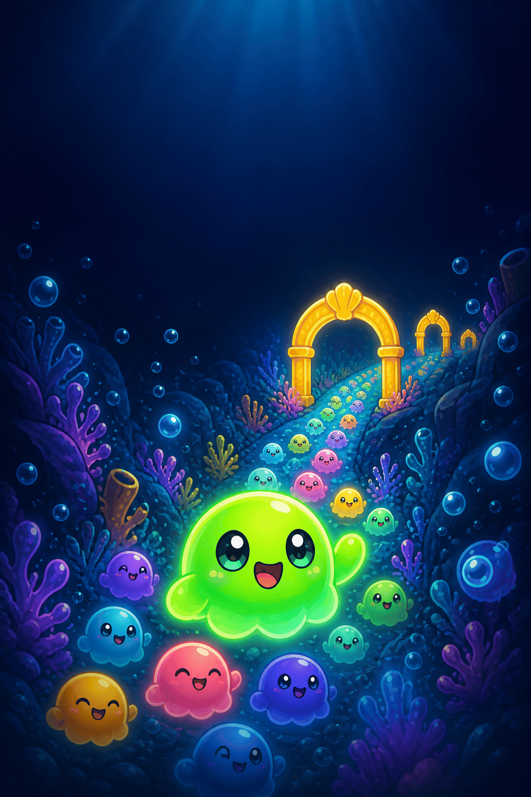
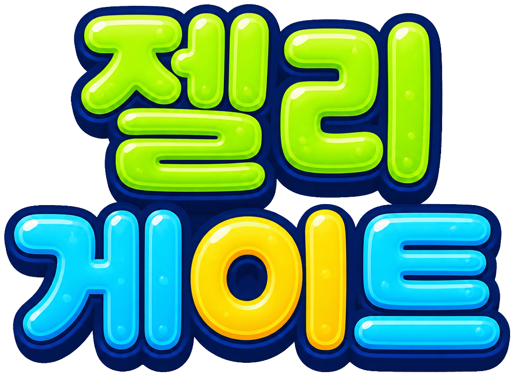

1구간
분모가 같은 진분수
24
최고 0마리
♥♥♥
🔊
정밀
화면을 좌우로 끌어
더 커지는 게이트
로 들어가세요.
시작하기
①
젤리 떼를 끌고 달립니다. 게이트에 적힌 분수만큼 젤리가 늘거나 줄어요.
②
화면을 좌우로 끌어(또는 ← →) 더 커지는 게이트로 들어가세요.
③
더 작은 곱을 고르면 젤리가 덜 늘거나 줄고, 한 번 봐준 뒤에는 목숨이 줄어요. 구간 끝 자물쇠 벽에 적힌 수
이상
이면 부숩니다. 조금 모자라도 한 번은 봐줘요.
④
정밀
버튼(또는 Shift)으로 잠깐 느리게. 구간당 2번.


곱했는데 왜 줄어?
5학년 2학기
분수의 곱셈
출동!
어떻게 놀아요? 〉
🔊
1/3
다음
화면을 탭해도 넘어가요